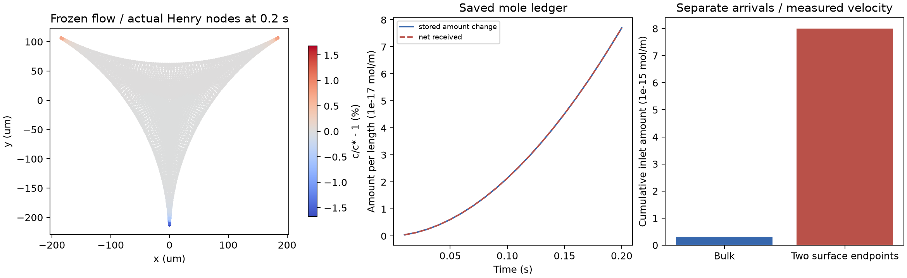

← FROTH 研究入口OPEN TOTAL-SOLUTE INTERFACE / FROZEN VELOCITY
把真正进入和离开的表活分别入账。
体相控制体通量与两侧气液界面端点输运已连接。8组、150步；检查总量、入口化学功、界面压缩和扩散耗散。这里使用给定的已计算速度场，尚未让浓度反过来改变流动。
≈1.2×10⁻¹⁴最大累计表活量相对收支误差
25.03×本批两侧界面输入量 / 体相输入量
0.142% / 0.381%末两时间步场差 / 内部空间重构场差

矢量PDF · 完整矩阵与8项数值检查 · 4项独立保存数据审计 · 输入、源码哈希与范围
这不是完整泡沫结果，也不是有限膜耗尽或边界积液模拟。固定几何、给定压力驱动速度、瞬时Henry平衡；没有浓度—Marangoni流动反馈、气体交换或破裂。外界可以做功，因此开放系统的化学自由能不要求单调下降。
入口不再只算“液量×浓度”
控制体边界使用实际P2中点流函数，入口半控制体的流量由端点—中点差得到。两侧气液界面的端点流量使用实际BDM气侧面速度的一侧端点迹。体相与界面逆向流分别迎风；入流用供给口浓度，出流用求解节点浓度。没有抵消逆向流、裁剪浓度或归一化质量。
本例0.2s内，主算例体相累计输入3.20×10⁻¹⁶mol/m，两侧界面累计输入8.008×10⁻¹⁵mol/m，总送出约8.251×10⁻¹⁵mol/m；其差与截面储存变化约7.70×10⁻¹⁷mol/m一致。这些是单位轴向长度的量。25倍关系来自本批几何、η/h和计算速度，不是通用实验结论，也没有把这个比例写入通量生成器。
自由能收支保留外界做功
用h(c)=c log c−c+1存储相对自由能，边界流出的f(c)=c log c−c自由能、入流混合耗散和界面压缩功单列。实际检查：
ΔH + D_BE + Δt(D_diff + D_upwind + D_inflow-mixing + B_free-energy + W_compression) = residual
当前W_compression是给定流场对浓度的化学压缩功，不能直接替换为黏性耗散并宣称全系统能量耦合。后续要连接Marangoni反馈、压力边界功及运动几何。即使入口浓度都为1，界面压缩也会改变Henry浓度；“均匀状态保持不变”只用于体相标量和无流动对照。
已执行矩阵
主网格n192、入口端部G3分级；细网格n288。初始浓度比1，标准入流比[1,1.01,.99]，contrast为[1,1.05,.95]。保存的external.csv是按Uref·r无量纲化的有符号外流率；容量按r²无量纲化，节点浓度为c/c*，其中c*=.002mol/m³。
独立复核与未完成部分
重新读取CSV，复核累计摩尔收支、节点终态自由能、逐步能量恒等式和最后一步各口通量。对比度放大5倍的源响应相对线性误差约1.63×10⁻¹²，证明入口浓度变化确实进入求解。体相均匀对照漂移约1.55×10⁻¹³，无流动Henry对照约5.73×10⁻¹⁴。
dt=.02→.01s的容量加权扰动场差.281%，.01→.005s差.142%。主/细网格共同内部3491点上的P1节点场重构差.381%；这个采样不覆盖所有狭窄入口单元，不能当作完整界面迹或全泡沫误差上界。
下一步将实际入口收支连接有限膜的存量，加入浓度反馈，并解决净来液下的运动几何守恒；再进入四泡/七泡网络、气体粗化和有限速破裂反馈。入口流动与边界做功参考。